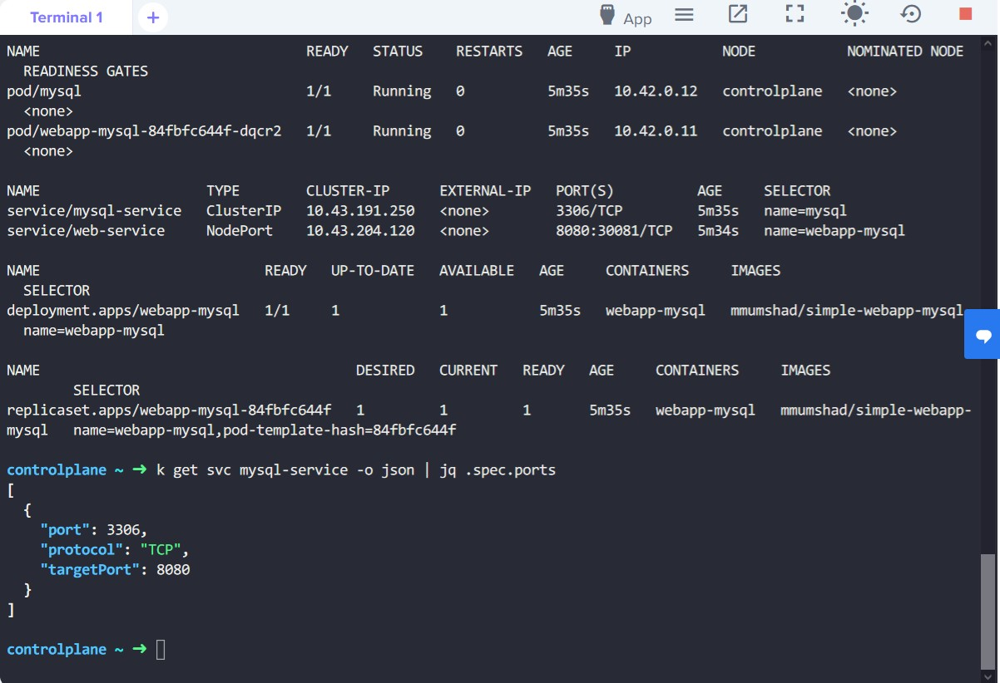
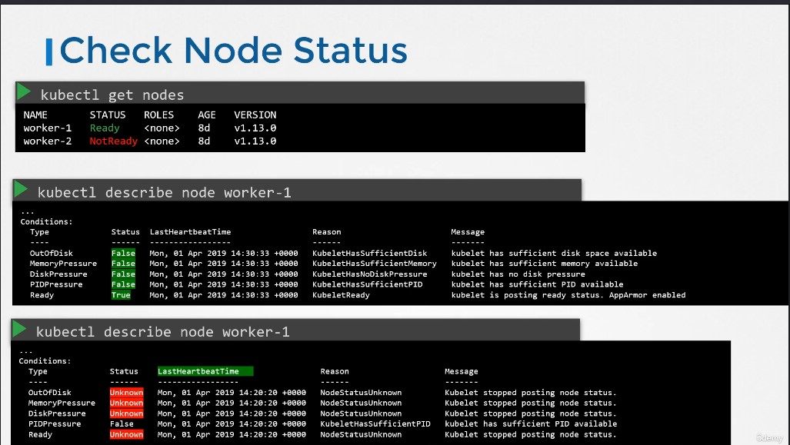
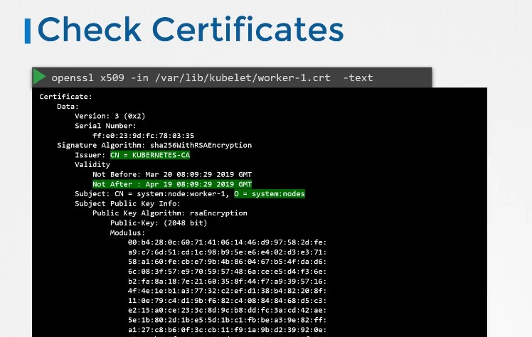
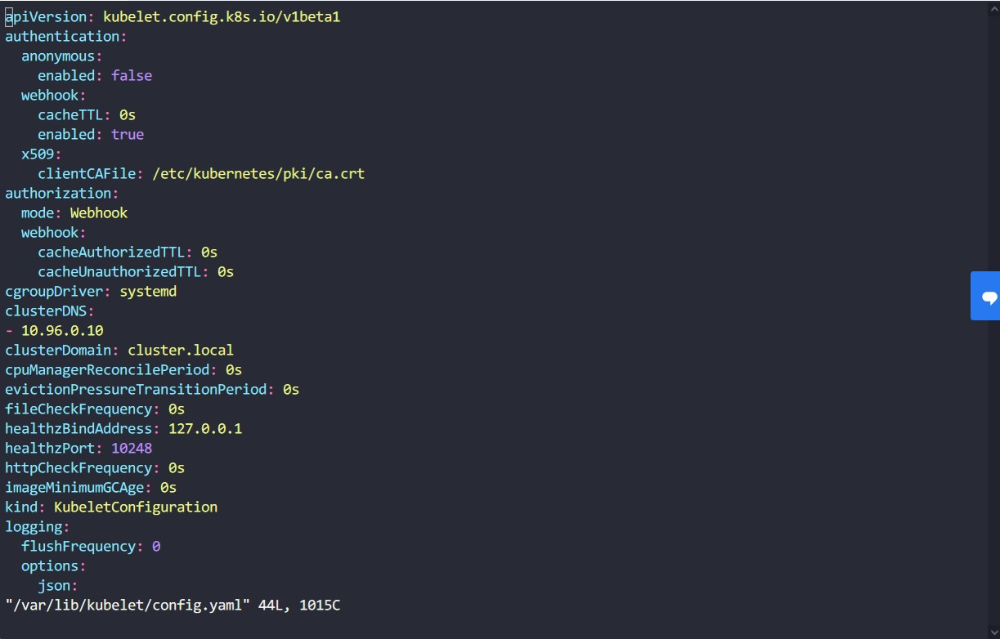
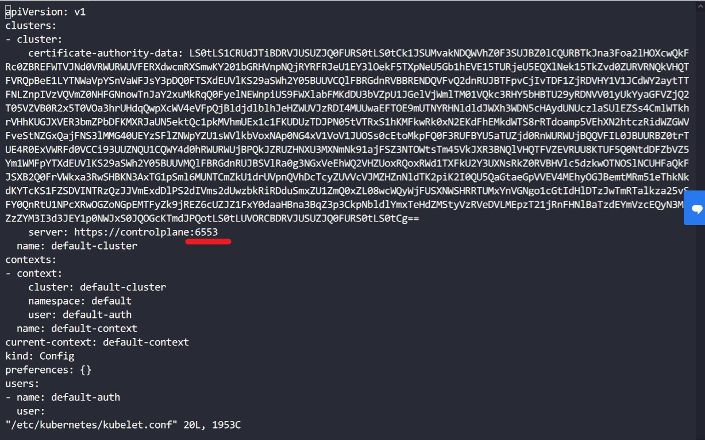
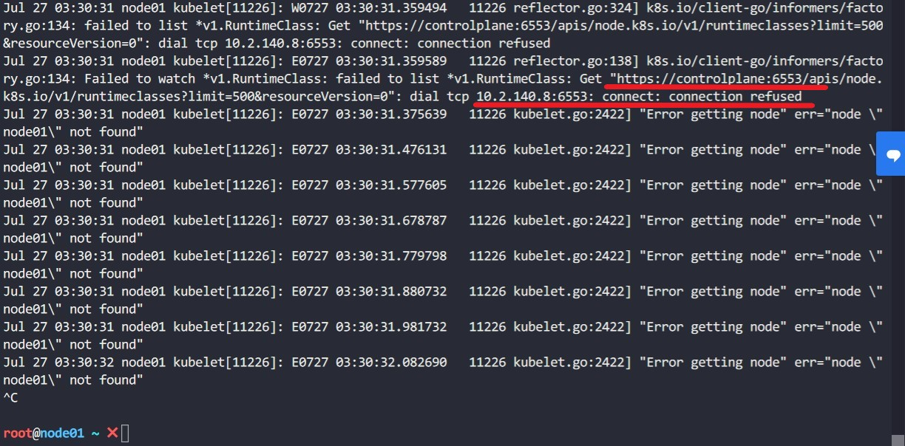
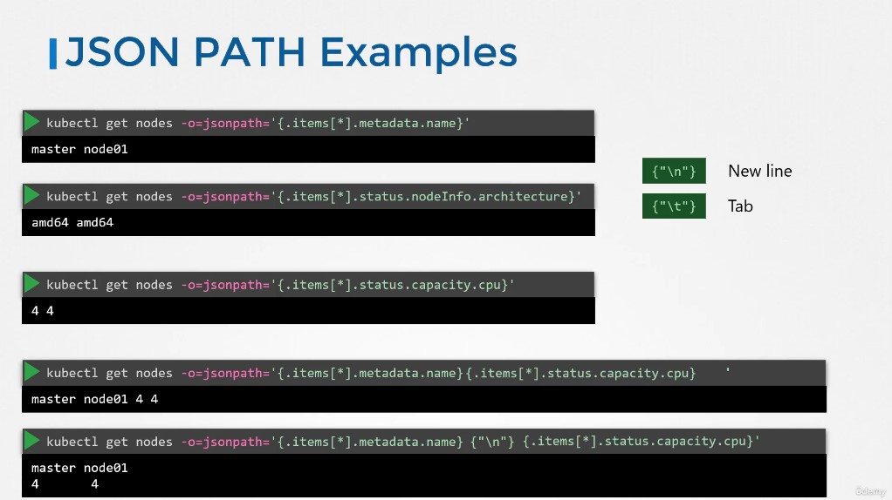
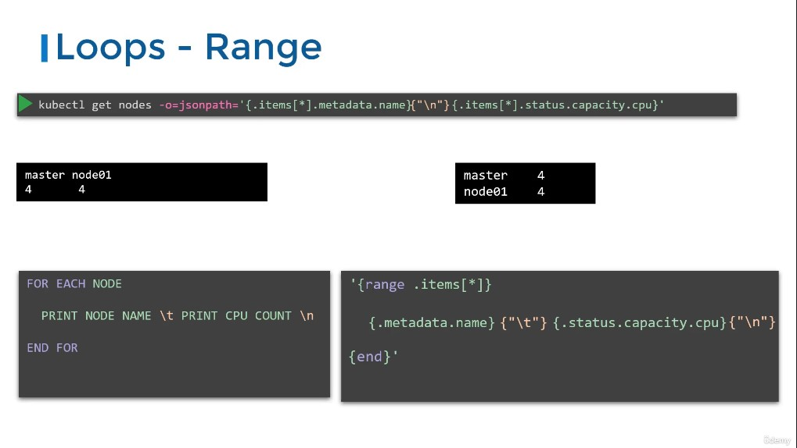
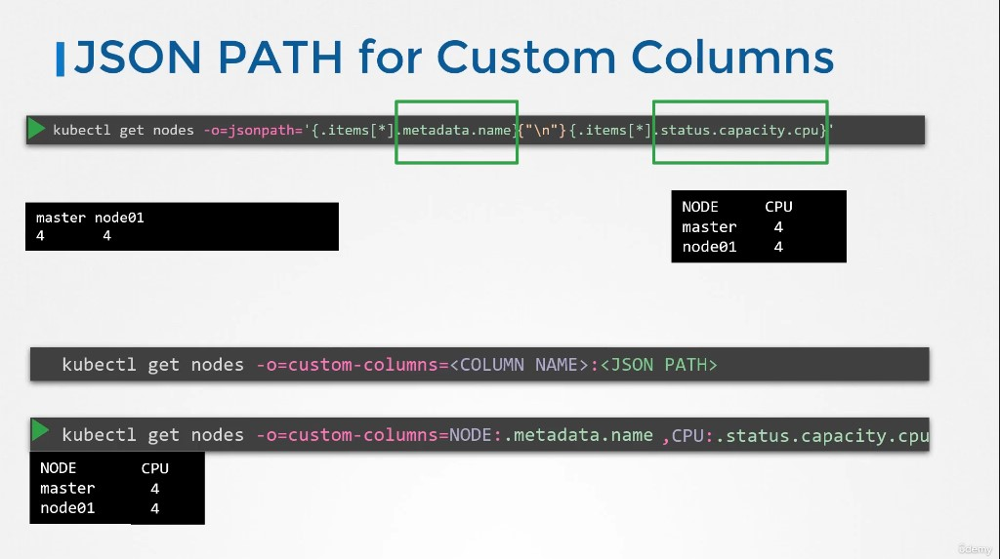
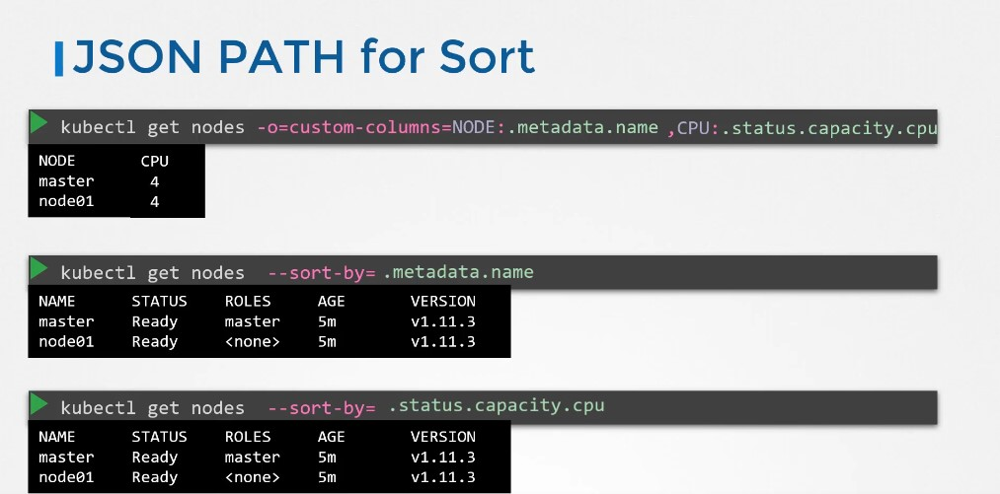

CKA Note Section 13 Troubleshooting
Contents
235. Application Failure
厚，debug 到眼睛快脫窗
- 先開 App Web 頁面查看錯誤訊息 (不確定正式考試時網頁是不是也設計成顯示錯誤訊息)，判斷可能出問題的地方
- 第一題網頁能開判斷 Web pod + service => 無問題，網頁顯示
-2 Name does not resolve=> 連不到 DB => 往mysql-service“DNS name” 查找 - 第二題一樣，網頁顯示
111 Connection refused=>
(1) 拒絕 => DB credential 有問題 => 要嘛在 Web pod env 不然就是 db pod env
(2)svcport 號ORselector 錯誤ORpod 身上 port 錯誤 - 第三題 網頁直接打不開啊! => 等待時間先去查 web svc =>
curl http://<svc_IP>:<port>(1) 後來噴出 504 Gateway Error => 5xx 系列 server 內部問題 => 都要查! (包含 web svc)槓(2)k get all -o wide先看一下能不能看出端倪，果然看到selector:name=sql00001=>k get pod mysql --show-labels - 第四題 env
DB_User不符合題目要求。 - 第五題 兩個 issue，第一個承上題。
Access denied for user 'root'@'10.42.0.20' (using password: YES)=> 這 error 是 DB 噴的代表 DB svc 沒問題 - 第六題 三個 issue
(1)web-serviceNodePort錯誤
(2) envDB_User錯誤

▲ 使用 k get all -o wide 顯示的 svc ports 欄位格式是 <svc_port>:<NodePort>，後者並不是 <targetPort>!!
239. Practice Test - Control Plane Failure
- 基本上都能從
/etc/kubernetes/manifest/底下的 static pod yaml conf 去做除錯 k describe pod、k logs打天下- 最後一台比較有趣，卡了一下~ host OS path 身上有
ca.crt但 logs 顯示 no such file => mount 出問題
241. Worker Node Failure

▲ worker node 的茶包射手預備姿勢。六發裝子彈 裝子彈送上槍機 LastHeartbeatTime 可以看最後狀態時間

▲ 使用 openssl x509 -in <.crt> -text 查看 kubelet 的證書是否過期，或者 journalctl -f -u kubelet.service 查看 service 的 log。
kubelet 有兩個 config
/var/lib/kubelet/config.yaml/etc/kubernetes/kubelet.conf

▲ kubelet daemond 使用的 config file

▲ kubelet 去跟 api-server 溝通用的 kubeconf

▲ journalctl -f -u kubelet.service 可以查 daemond log (-f,fallow)
問問筆記
|
|
自問自答
- 位於
/var/lib的是 kubelet system daemond 吃的 config。 etc底下的是 kubeconfig，跟 api-server 溝通用的，所以跟~/.kube/config一樣很正常。
debug 方向就是
1. daemond running good 但 kubectl get node 看到節點是死的 => 找跟 api-server 溝通的 kubeconfig
2. daemond not running => 找 /var/lib daemond 自身的 config
244. Network Troubleshooting
- CKA 考試當中不會要你背如何安裝 CNI plugin (有考會給指示)
那我 Networking 那章在忙什麼 還專程去找/更新書籤
CoreDNS
pod與service越多，CoreDNS 的負擔就會越重，尤其 memory 是 QPS 效能指標。- CoreDNS 會需要以下 K8s resources:
(1) aservice accountnamed coredns
(2)cluster-rolesnamed coredns and kube-dns
(3)clusterrolebindingsnamed coredns and kube-dns
(4) adeploymentnamed coredns
(5) aconfigmapnamed coredns
(6)servicenamed kube-dns
如果你看到 CoreDNS pod 處於 pending => 檢查 CNI plugin 是否安裝， CrashLoopBackOff or Error state =>
(1) 關閉 SELinux (2) Modify the coredns deployment to set allowPrivilegeEscalation to true
(不考) 248. Advanced Kubectl Commands

▲ 透過 -o=jsonpath '{PATH1}{"\t"}{PATH2}' 來達到客製化 kubectl output。

▲ 如果想顯示成右邊的格式，就需要用到 range，可以把它當成 Foreach 使用。

▲ 或者使用 -o=custom-columns 來達成相同效果。

▲ 想要排序的話可以使用 --sort-by=<JSON PATH>。
Author 老柯
LastMod 2022-08-03 (13ba6cd)